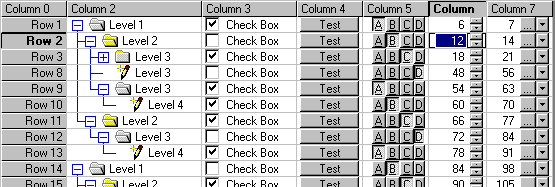
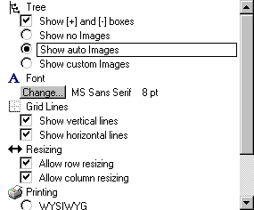

Дерево и кнопки для MFC Grid ControlАвтор: Ken Bertelson   ОписаниеЭтот пример показывает, как добавить в MFC Grid control (наследованный от CWnd) такие элементы управления как дерево и кнопки. Пример наследует классы от
Работая с Как установить ячейки, отображающие деревоДобавьте в заголовочный файл CDialog или CView: // (файл .h)
CGridCtrl m_Grid; // сам грид
CTreeColumn m_TreeColumn; // поддержка колонок дерева
В CDialog или CView добавьте массив UCHAR-ов, который определяет стандартные уровни дерева. 1=корень, 2=первая ветвь корня и т.д. // (файл .cpp file)
unsigned char ucPatternAry[] = { 1,2,3,4,4,5,5,3,3,4,2,3,4};
В // (файл .cpp)
m_Grid.SetColumnCount( 4);
m_Grid.SetFixedColumnCount( 1);
m_TreeColumn.TreeSetup( &m_Grid, // grid
2, // колонка в которой дерево
sizeof( ucPatternAry), // кол-во строк в дереве
1, // Счётчик строк
ucPatternAry,// Массив уровней
TRUE, //показываем линии дерева(не grid)
// F=не показываем
TRUE); // используем первые 3 картинки из
// существующего списка картинок
Вы так же можете изменить существующую
структуру дерева, путём вызова из CTreeColumn функции Установка ячеек, которые рисуют кнопкиДобавьте в заголовочный файл // (файл .h)
CGridCtrl m_Grid; // сам
CBtnDataBase m_BtnDataBase; // берём общие свойства для кнопок
В .cpp файлы CDialog или CView. // (файл .cpp)
m_BtnDataBase.SetGrid( &m_Grid);
Возможно Вам захочется использовать свойства
ячейки с кнопкой для всех кнопочных ячеек. // (файл .cpp)
// Сохраняем старые свойства ячейки
CGridBtnCell GridCellCopy;
GridCellCopy.SetBtnDataBase( &m_BtnDataBase);
CGridCellBase* pCurrCell = m_Grid.GetCell( row, col);
if (pCurrCell)
GridCellCopy = *pCurrCell; //данные сохранятся в m_BtnDataBase
После того, как окно грида создано, замените
стандартные ячейки ячейками с кнопками по Вашему
усмотрению. Следующий код вызывается в // (файл .cpp) m_Grid.SetCellType( row, col, RUNTIME_CLASS(CGridBtnCell) ); CGridBtnCell* pGridBtnCell = (CGridBtnCell*)m_Grid.GetCell(row,col); // сообщаем новой ячейке - где лежат её свойства pGridBtnCell->SetBtnDataBase( &m_BtnDataBase); Пример показывает - как добавить в ячейку до 4-х кнопок. // (файл .cpp)
pGridBtnCell->SetupBtns(
0, // индекс картинки для рисования
DFC_BUTTON, // тип кнопки
DFCS_BUTTONPUSH, // на подобие nState в DrawFrameControl()
CGridBtnCellBase::CTL_ALIGN_CENTER,
// горизонтальное выравнивание картинки
0, // ширина, либо 0 для подстраивания под
// размер ячейки
FALSE, // T=кнопка входит в группу радиокнопок
"Btn Text" ); // Текст в кнопке; NULL - текста нет
|